Lem
Größte Höhe: 106 cm
Größte Breite: 53 cm
Dicke: 20-23 cm
Runenhöhe: zw. 9 und 12 cm
Runeninschrift :
NN errichtete diesen Stein zum Andenken an Urik, seinen Bruder.

48 - Lem - Letztes Update 09.09.2025
Listennummer : DR kein / DK MJy 58
| Navidaten: 56.50350 10.06288 oder: Lemvej 51, 8930 Randers |
Transliteration: (þ)(u)... s-(i)(n) (þ)(ą)si ...-- : urik : buþur : sin :
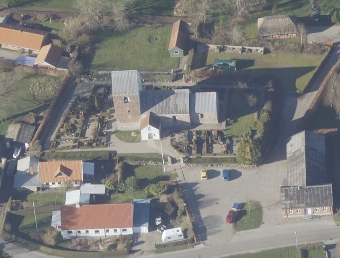
Das ist ein Luftfoto vom 01.04.2023 von Skråfoto das die Kirche von Lem zeigt. Skråfoto ist eine Webanwendung, die von Klimadatastyrelsen weltweit kostenlos bereitgestellt wird - Freie Nutzung unter Beachtung der Lizenz: CC BY 4.0. Die Aufnahmen werden alle zwei Jahre erneuert und neben einer Senkrechtaufnahme wird ein Schrägbild aus jeder Himmelsrichtung angeboten, das man über eine Adresssuche aufrufen kann.
Dieser Runenstein wurde erst im Jahre 1957 durch den damaligen Küster Axel Schou, seitlich an der Treppe zum Kirchhof/Friedhof sitzend, entdeckt. Er war mit den Runen in Richtung Treppe eingesetzt gewesen. Die Inschrift wurde erst ca. 50 Jahre nach Entstehung der Treppe - um 1907 - entdeckt. Der Bau der Treppe, Zugang zum damaligen alten Schulhaus, war vom damaligen Schullehrer, Chr. Sørensen, bezahlt worden. Die späte Entdeckung beruht darauf, dass der Steinmetz, als die Treppe fertig war, die Runen, die nicht von der Treppe verdeckt waren, mit seinem Hammer zerschlug. Aber zum Glück wurde die Inschrift dadurch nicht völlig zerstört. Es ist nicht das einzige Mal, dass ein Steinmetz eine Runeninschrift zerstörte, damit ihm sein Stein nicht weggenommen werden sollte.
Die Spitze, das Unterteil und die Rückseite des Steines sind wohl aufgrund der Behandlung durch den Steinmetz abgebrochen, so dass die Inschrift nur teilweise gelesen werden kann (Zur besseren Erkennbarkeit habe ich die Runenreihen auf dem Foto - links abrufbar - etwas abgedunkelt).
Der Stein befindet sich heute im Waffenhaus der Kirche von Lem, wo er nach seiner Entdeckung aufgestellt worden war.
Runologen datieren diesen Runenstein in die Stein von 970 - 1020. Die Inschrift beginnt in der unteren linken Ecke und folgt der Steinkontur. Es bleibt festzustellen, dass der Runenschreiber einen Fehler in seiner Rechtschreibung hat, er hat nämlich bubur anstelle des Wortes brubur (Bruder) geschrieben.
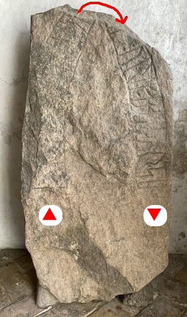
Eigenes Foto - Leserichtung von mir eingezeichnetErstmals stand ich am Samstag, 17.08.1991, vor der verschlossenen Kirche. Danach kam ich am Sonntag, 02. Juli 2000, vor Ort und hatte wieder Pech. Aber in meinen Unterlagen habe ich vermerkt, dass ich mir den Schlüssel ausleihen und darüber doch noch in die Kirche und den Runenstein erstmals sehen konnte. Dabei habe ich sicherlich das Foto im linken Frame gemacht. Auch bei meinem Besuch am 26.08.2016 - ein normaler Freitag - war die Kirche leider geschlossen. Der Runenstein war durch ein Fenster schwach auszumachen, aber mehr war an dem Tag nicht möglich. Ich war auf meiner Tagestour auch schon spät dran (16.40 Uhr), sodass ich niemanden von der Infotafel anrufen oder aufsuchen wollte. Ein Foto der Kirche habe ich hier:

Im Rahmen meiner 2022er Jütland Runenstein Tour kam ich am Dienstag, 14.06.2022, vor Ort und traf erneut auf eine verschlossene Kirchentür. Ich habe aber per E-Mail einen neuen Termin für den Donnerstag, 16.06.2022, vereinbaren können, zu dem mir vom Graver die Tür extra geöffnet worden war. Nun konnte ich dankbar diese Fotos machen. An dieser Stelle nochmals ein "Tusind tak" an Ole Michael Strange und Dorte Andreasen die es mir über unseren E-Mail Austausch ermöglicht haben.
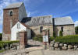 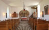 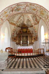 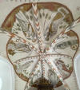 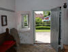 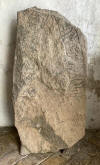 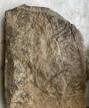 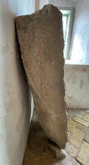 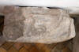


Erik Moltke (*04.04.1901 - 19.10.1984, Runologe, Historiker - link-LIVES)
 Bildquelle: Scan von Buchumschlag "Runerne i Danmark og ders
oprindelse" - Erik Moltke - 1976 - Lizenz:
CC-BY-SA
Bildquelle: Scan von Buchumschlag "Runerne i Danmark og ders
oprindelse" - Erik Moltke - 1976 - Lizenz:
CC-BY-SA
hat diese beiden sw Foto (wohl) am 06.11.1957 aufgenommen.
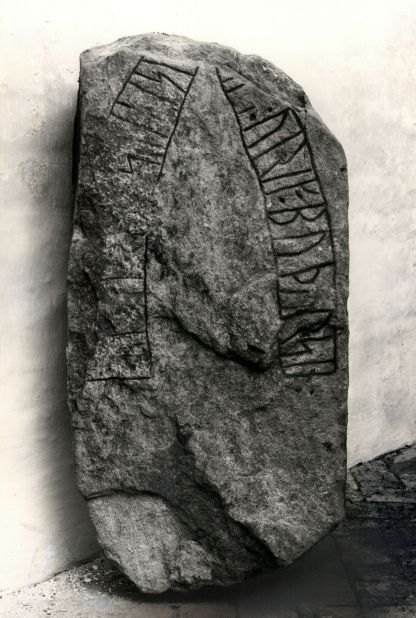
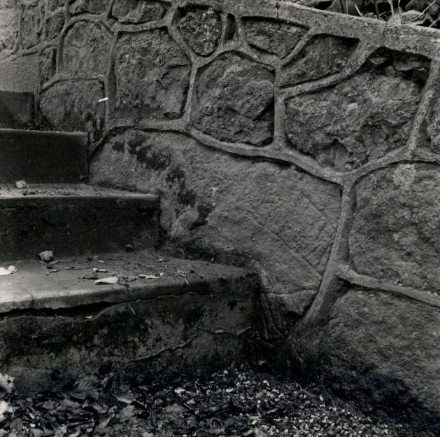
Quelle: Digitale Sammlung des Nationalmuseums in Kopenhagen - und hier - Lizenz: CC-BY-SA
Im Vorfeld zu dem 2016 erschienenen Buch von Lisbeth M. Imer (*1973, Runologin am Nationalmuseum Kopenhagen) "Danmarks Runesten - en fortælling" reiste sie mit dem Fotografen Roberto Fortuna zur Bestandsaufnahme durch die Lande. Dieser hat die Runensteine mit Schräglicht aufgenommen und darüber wirklich herausragende Fotos erzielt. Diese Fotografien stammen vom 08. März 2012.
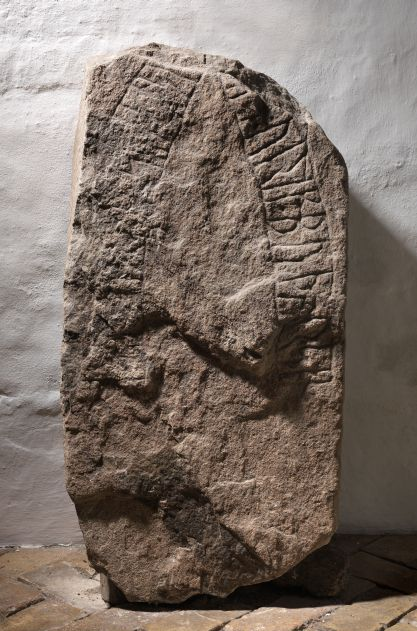
Quelle: Digitale Sammlung des Nationalmuseums in Kopenhagen - Lizenz: CC-BY-SA
Den Eintrag zu diesem Runenstein aus der dänischen Runen Datenbank im Internet kann man hier abrufen.
Die Informationen in "Fund og Fortidsminder" zu dem Runenstein finden sich hier. Darin ist inzwischen dieser Zustandsbericht des Steinrestaurators Leif Vognsen aus dem Jahr 2018 eingebettet.
Über diesen Link finden sich zu dem Runenstein Informationen des Forschungsprojektes "Runes" der Akademie der Wissenschaften zu Göttingen.
Über die Webseite von www.biopix-foto.de kann man ein Foto dieses Runensteins mit rot nachgezeichneten Runen anschauen, was natürlich eine deutlich verbesserte Ansicht darstellt, auch wenn die Runen im Vergleich zu anderen Runensteinen eigentlich gut lesbar sind.
Über Google StreetView kann man heute von zu Hause aus in die Kirche von Lem spazieren, den Runenstein im Waffenhaus, gleich nach dem Eingang rechts anschauen, aber auch die sonstige Kirchenausstattung im Inneren bis kurz vor dem Altar betrachten.
Zu der Historie der Kirche kann man über diesen Link einiges - nur in dänischer Sprache (Gute Übersetzung mit Google problemlos möglich) - erfahren